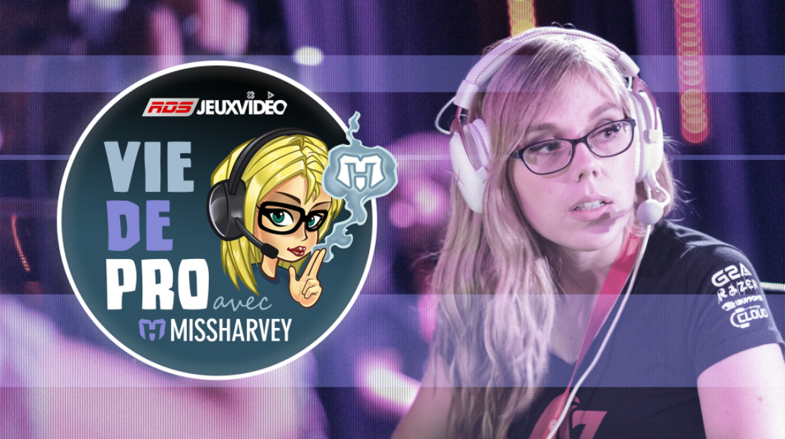

Stéphanie « missharvey » Harvey rencontre des joueurs professionnels de jeux vidéo et d'autres intervenants du monde du sport électronique. Stéphanie mène une entrevue où on découvre le joueur, mais également l'être humain. On démystifie les sports électroniques, communément appelés esports, et on apprend à connaître ces joueurs qui sont des vedettes internationales dans leur milieu, mais méconnues du grand public québécois. Une série web RDS / Bell Média.
Mon rôle : développement du concept, production au contenu et relations avec les créateurs de contenu (invités de l'émission).